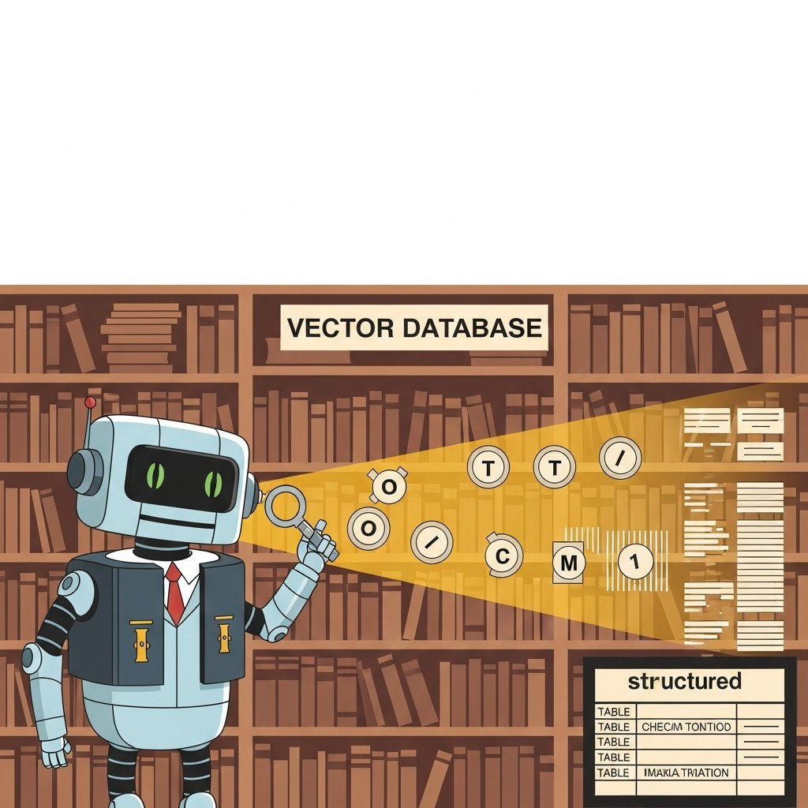

Part Overview
Embeddings, structured information extraction & NER, RAG, knowledge graphs, cross-modal retrieval.
Big Picture
Embeddings, structured information extraction & NER, RAG, knowledge graphs, cross-modal retrieval.
Chapters
Chapter 31 Embeddings, Vector Databases & Semantic Search
Chapter 32 RAG Fundamentals
Chapter 33 Cross-Modal Reasoning and Multimodal RAG
Chapter 34 Structured Information Extraction & NER
Chapter 35 Advanced RAG: Knowledge Graphs, Ingestion & Frameworks
Chapter 36 Retrieval Tools of the Trade